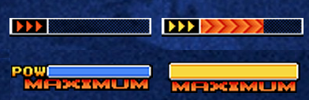

EQUIPES E LISTA DE GOLPES
Art of Fighting Team
Fatal Fury Team
Hero Team
New Ikari Warriors Team
Korea Team
New Faces Team
Psycho Soldiers Team
Special Team
Women Fighters Team
Orochi New Faces Team


Personagens sem Equipe
Sub-Boss


Boss
CONTROLES
A = Soco Fraco
B = Chute Fraco
C = Soco Forte
D = Chute Forte
MODOS DE JOGO
ADVANCED MODE
Emergency Escape ← ou → + AB ao mesmo tempo Seu personagem irá rolar para frente ou para trás, podendo ser usado para escapar de um ataque inimigo e fugir para trás dele ou apenas se distanciar para começar um novo ataque.
Guard Counter Defendendo, segure → e aperte A ou B Ao custo de 1 stock, o timing é essencial para que você contra-ataque o oponente depois de defender o seu ataque.
Guard Cancel Defendendo, aperte AB ao mesmo tempo Ao custo de 1 stock, o timing novamente é essencial para que você se recomponha depois de defender um ataque inimigo.
MAX Mode Aperte ABC ao mesmo tempo Uma vez que você tiver 1 stock disponível, ativar o MAX Mode aumenta seus atributos de ataque e defesa por um tempo limitado. É possível fazer os Super Desperation Moves se você tiver outro stock disponível enquanto o MAX Mode estiver ativado!
ADVANCED Mode emprega táticas agressivas e jogabilidade vinda do KOF '96. Você pode utilizar o rolamento para derrotar o inimigo e aumentar seus stocks na nova barra POW, utilizando seus golpes especiais.
EXTRA MODE
Esquiva Aperte AB ao mesmo tempo Seu personagem irá dar um passo ao plano de fundo, fazendo com que ele fique seguro contra a maioria dos ataques, projéteis e Desperation Moves.
Ataque Evasivo Durante a esquiva, aperte qualquer botão Ao evadir o ataque do oponente, aproveite a chance para ataca-lo com um ataque surpresa!
Encher a Barra Segure ABC ao mesmo tempo Auto explicativo. Ao alcançar o fim da barra, o nome MAXIMUM irá aparecer e será possível o uso dos Desperation Moves. Tome cuidado, pois o seu personagem fica vulnerável à ataques enquanto está carregando.
EXTRA Mode emprega táticas defensivas e jogabilidade de KOF '94 e KOF '95. Você pode utilizar o movimento clássico da esquiva para evadir ataques inimigos e encher a barra para poder utilizar golpes especiais.